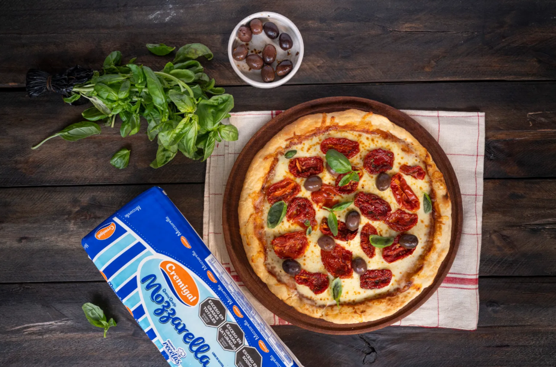

RECETA 1: Pizza de Muzzarella

Ingredientes:
- Harina común 500g.
- Levadura fresca 25g.
- Sal 15g.
- Agua 275cc.
- 400g de puré de tomate.
- 400g Mozzarella Cremigal.
Preparación:
- Empezamos por la masa, integrando la harina con la sal, la levadura y el agua. Nos ayudamos con una cuchara hasta no ver liquido suelto y ahí empezar a amasar con las manos, hasta obtener un bollo liso, que vamos a dejar descansando tapado con una bolsa o film hasta que duplique su volumen.
- Luego vamos a dividir en dos el bollo, y empezar a estirar la masa hasta tener la altura deseada.
- Llevamos a una placa en la que vamos a agregar el puré de tomate al que previamente lo condimentamos con un poco de sal y orégano en cantidades a gusto.
- Por encima le agregamos 200g de Mozzarella Cremigal. Y mandamos a un horno precalentado en 220ºC por aproximadamente 15 o 20 minutos según el gratinado que busques.
- Cuando sale agregás orégano, ¡Cortá las porciones y a disfrutar!